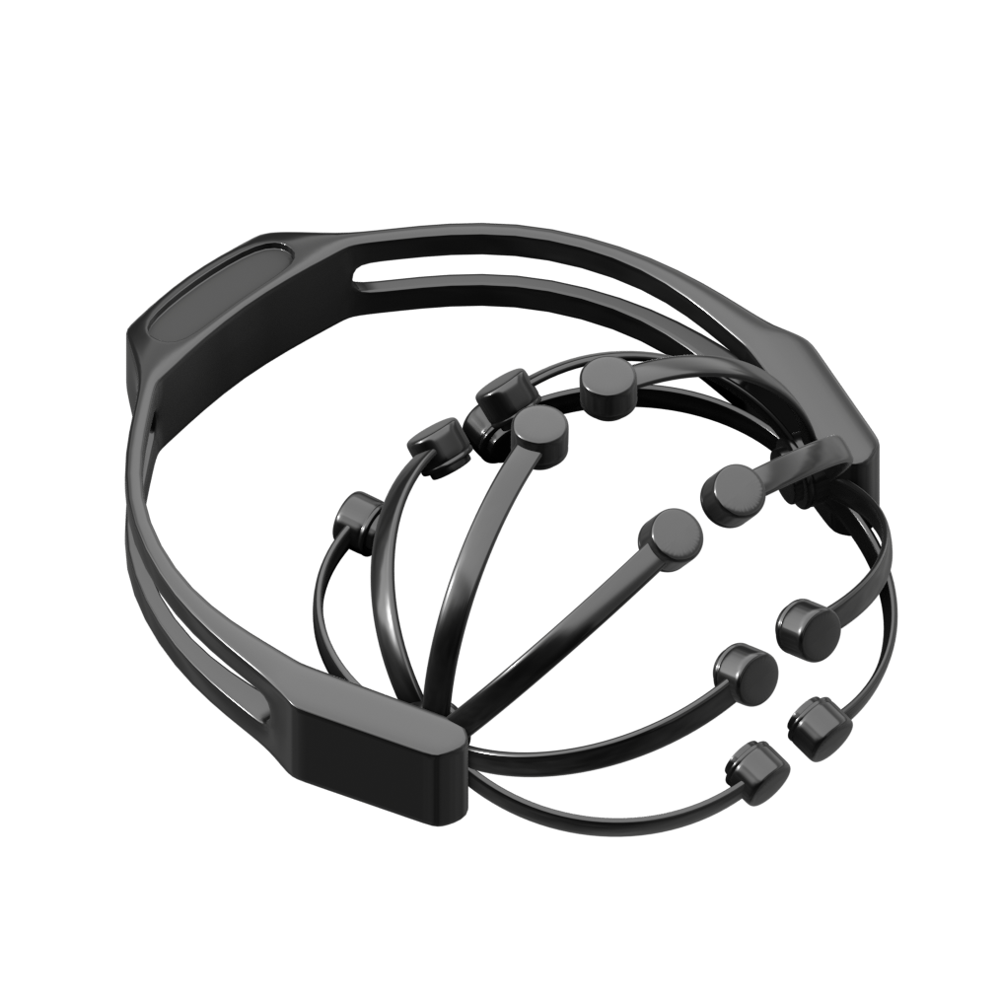

<ng-container *ngFor="let device of deviceService.devices">
  <app-device-item [device]="device"></app-device-item>
</ng-container>

<ion-item lines="none" *ngIf="!scanning && deviceService.devices.length > 0" class="found-text">
  <ion-label class="ion-text-right">
    <small>Found {{ deviceService.devices.length + (deviceService.devices.length > 1 ? ' devices' : ' device')}}.</small>
  </ion-label>
</ion-item>

<div class="headset-container" *ngIf="!scanning && deviceService.devices.length == 0">
  <small class="label">No device found.</small>
  
</div>